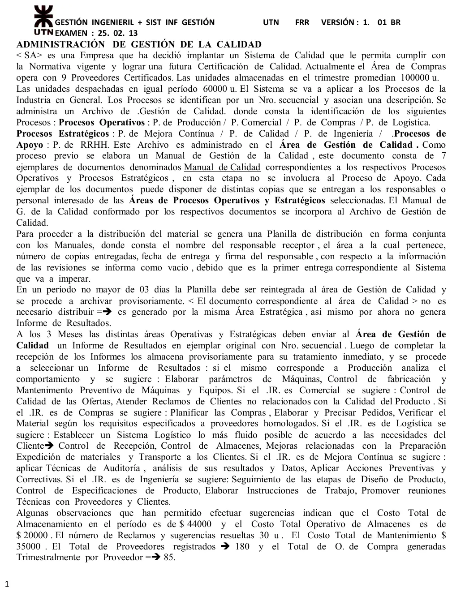
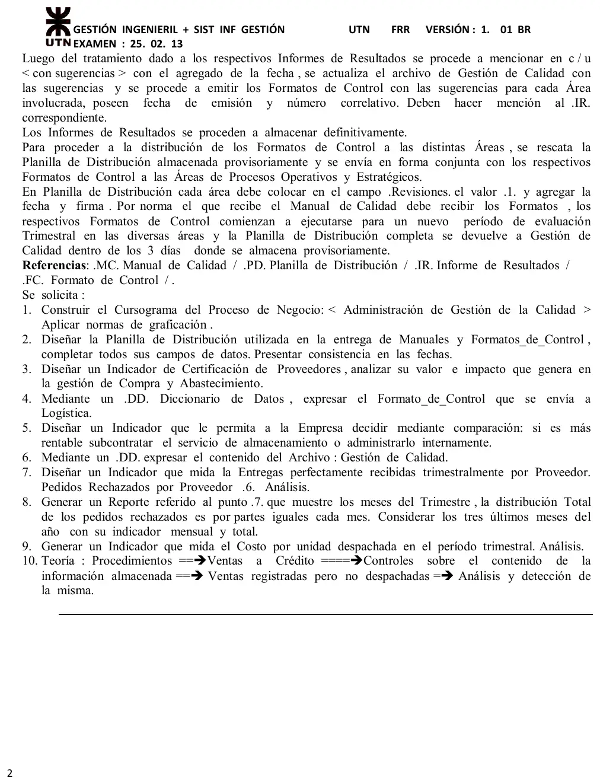

Final, 25/02/2013
Final, 25/02/2013
Enunciado




Propuesta de respuesta
Respuesta no verificada. La propuso Luta Studios con inteligencia artificial y ningún docente la revisó. Puede tener errores.
1. Cursograma
Una columna por sector, con los símbolos del resumen de un alumno que usa la materia. El archivo Gestión de Calidad va al costado con flecha punteada hacia él, porque se actualiza. La doble línea entre la planilla y los manuales es la acción conjunta, porque se mandan juntos. El número chico de cada documento es el ejemplar. Cada informe de resultados se trata según su proceso, con las sugerencias que da la narrativa para cada uno. Tocá el dibujo para verlo en pantalla completa.
2. Planilla de distribución
Planilla de distribución. Manual de Gestión de la Calidad
| Responsable receptor | Área | Copias | Fecha de entrega | Firma | Revisiones | Fecha | Firma |
|---|---|---|---|---|---|---|---|
| Responsable de Producción | Producción | 3 | 04/03/2013 | Firmado | 1 | 17/06/2013 | Firmado |
| Responsable Comercial | Comercial | 2 | 04/03/2013 | Firmado | 1 | 17/06/2013 | Firmado |
| Responsable de Compras | Compras | 2 | 04/03/2013 | Firmado | 1 | 17/06/2013 | Firmado |
| Responsable de Logística | Logística | 2 | 05/03/2013 | Firmado | 1 | 18/06/2013 | Firmado |
| Responsable de Mejora Continua | Mejora Continua | 1 | 05/03/2013 | Firmado | 1 | 18/06/2013 | Firmado |
| Responsable de Ingeniería | Ingeniería | 2 | 05/03/2013 | Firmado | 1 | 18/06/2013 | Firmado |
Reintegrada a Gestión de Calidad el 07/03/2013 y otra vez el 20/06/2013.
En la primera entrega las tres columnas de revisiones quedan vacías, como dice la narrativa. Se llenan cuando llegan los formatos de control. Las fechas son consistentes. La planilla vuelve dentro de los 3 días de la última entrega, los informes llegan a los 3 meses, y la revisión es posterior. Calidad no figura porque su documento no se distribuye. Los nombres y las copias son de ejemplo.
3. Indicador de certificación de proveedores
Solo 5 de cada 100 proveedores están certificados. Para una empresa que busca su propia certificación es muy poco. En Compras y Abastecimiento significa que casi todo lo que entra hay que inspeccionarlo al recibirlo, con más costo y más rechazos. Es lo que apunta la sugerencia para Compras de la narrativa, que pide verificar el material contra lo especificado a proveedores homologados. Conviene concentrar las compras en los 9 certificados y pedirles la certificación a los que más se usan.
4. DD del formato de control para Logística
Formato_de_Control = nro_FC + fecha_emision + nro_IR + area
+ sugerencias(e)
sugerencias(e) = sistema_logistico + control_recepcion
+ control_almacenes + mejora_preparacion_expedicion
+ mejora_transportearea es Logística. Las sugerencias son las que da la narrativa para ese proceso. La primera pide un sistema logístico lo más fluido posible de acuerdo a las necesidades del cliente, y las otras cuatro la desarrollan. El número correlativo, la fecha y la mención del informe son los datos que la narrativa le exige al formato.
5. Indicador para decidir si se subcontrata el almacenamiento
Con el indicador del apunte, el costo de almacenamiento por unidad.
Se compara con lo que cobraría un tercero por unidad almacenada en el mismo período.
Si da más de 1, almacenar adentro sale más caro y conviene subcontratar. Si da menos de 1, conviene seguir adentro. La narrativa no da el precio del tercero, así que la decisión queda planteada.
6. DD del archivo Gestión de Calidad
Gestion_Calidad = nro_proceso + descripcion + tipo_proceso(d)
+ (nro_documento_MC) + (informe(e))
tipo_proceso(d) = <operativo | estratégico | de apoyo>
informe(e) = nro_IR + fecha_sugerencia + sugerenciasHay un registro por proceso, que se identifica por un número secuencial con su descripción. Son ocho, cuatro operativos, tres estratégicos y RRHH, de apoyo. RRHH no tiene documento del manual en esta etapa, por eso va entre paréntesis. informe(e) se agrega en cada período, cuando se tratan los informes de resultados.
7. Entregas perfectamente recibidas por proveedor
Es el indicador del apunte, que a pesar del nombre divide los pedidos rechazados. Se toman las 85 órdenes de compra trimestrales por proveedor.
Al proveedor se le rechazan 7 de cada 100 pedidos, o sea que recibe bien el 92.94 %. Con solo 9 proveedores certificados, como en la consigna 3, la cifra es esperable. Si se repite en varios proveedores, es la razón para pasarse a los certificados.
8. Reporte del indicador por mes
Entregas perfectamente recibidas por proveedor. Cuarto trimestre
| Mes | Órdenes de compra | Pedidos rechazados | Indicador |
|---|---|---|---|
| Octubre | 28 | 2 | 7.14 % |
| Noviembre | 28 | 2 | 7.14 % |
| Diciembre | 29 | 2 | 6.90 % |
| Total del trimestre | 85 | 6 | 7.06 % |
Los 6 rechazos van en partes iguales, 2 por mes, como pide la consigna. Las 85 órdenes no se dividen exacto en tres, así que se reparten 28, 28 y 29.
9. Costo por unidad despachada
Cada unidad que sale le cuesta al almacén 33 centavos de operación. Se despacha el 60 % de lo que se almacena, así que el resto sigue ocupando lugar y sumando al costo de almacenamiento de la consigna 5. Es el dato para comparar contra un operador logístico.
10. Teoría. Ventas registradas pero no despachadas
El Drive no tiene el apunte con el que se contesta. Lo que sigue sale del procedimiento de ventas del resumen de un alumno.
En una venta a crédito el remito acompaña la mercadería y el cliente lo firma. Recién con el remito firmado, Contaduría hace la factura y el registro contable. Una venta registrada pero no despachada es una factura en el subdiario de ventas sin su remito conformado.
Cómo se detecta. Cruzando cada factura registrada con su remito firmado por el cliente, por número de nota de pedido. Las facturas que no tienen remito, o que lo tienen sin firma, son ventas registradas sin despacho. Se previene si la factura solo se puede emitir contra un remito conformado.
Respuesta no verificada. Puede tener errores.
Se armó con las páginas del parcial y del final, secciones Cursograma, Diccionario de datos, Reportes, Indicadores de gestión, Procedimiento de ventas y Control interno.
Quedó en duda: La narrativa no dice cuántas copias de cada documento del manual se entregan, ni si el formato de control lleva copia. La consigna 7 se resuelve con el indicador del apunte, que divide los pedidos rechazados aunque se llame de entregas perfectamente recibidas. En la consigna 5 falta el precio del tercero, así que la decisión queda planteada. En la 8, las 85 órdenes se reparten 28, 28 y 29 porque no se dividen exacto. La consigna 10 pide los controles de la guía Procedimientos y Técnicas de Control, que no están desarrollados en el Drive. La respuesta sale del procedimiento de ventas del resumen de un alumno. Las fechas, nombres y copias de la planilla son de ejemplo. Los cursogramas y el DD salen de material de alumnos.
¿Cómo te fue?
Marcá cada tema del examen.
- CursogramaCursograma, en Parcial de aprobación directa
- DDCómo viene el examen, en Parcial de aprobación directa
- IndicadoresIndicadores de gestión, en Parcial de aprobación directa
- ReportesReportes, en Parcial de aprobación directa
- Control internoControl interno, en Final